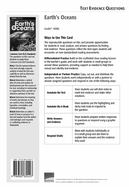

Informational Text
Earth’s Waters
Earth’s Oceans
Lexile® 1020L
Related Resources
Text-Dependent Comprehension
Scaffolded Reading and Comprehension
Other Titles in This Topic Set
Online Resources
Essential Question
Supporting Questions
Enduring Understanding
Next Generation Science Objectives
STEM Connections
ELA Strategies and Skills
Text-Dependent Comprehension Strategies
Vocabulary Strategies
Writing to Sources (p. 12)
What Makes This Text Complex? | |
Purpose and Levels ➌ | The purpose of the text is to take an in-depth look at Earth’s oceans, its role in the hydrosphere, and its interaction with other subsystems. |
Structure ➌ | The text includes: explanatory text, compare and contrast, procedural text, sidebars, maps, diagrams, and charts. |
Language Conventionality ➌ | • Chapters include complex sentences. • Domain-specific terms are often supported, while other academic vocabulary is seldom defined. |
Knowledge Demands ➌ | The text assumes considerable knowledge of complex Earth, Life, and Physical Science concepts. |
Qualitative text complexity dimensions from the CCSS are scored on the following scale:
➊—Low; ➋—Middle Low; ➌—Middle High; ➍—High
*Citations refer to pages within this teacher’s guide that address the specific text complexity.
First Read
Preview and Make Predictions SL.6.1b, SL.6.1c
Invite students to flip through the book and view photos, or project the whiteboard version of the text and preview the pages together.
Have students turn to the Table of Contents and read the chapter heads and supporting questions for each chapter.
Invite students to read the book description and the About the Author blurb on the back cover.
Ask: How do these features help you figure out what you’ll learn about in this book?
Collaborative Whole-Group Discussion SL.6.1b, SL.6.1c
Ask: What would cause the tub toys to drift? Why do you think scientists are so interested in this story? What can they learn from it?
If your students need more support, use the Scaffolded Preview provided for each section.
Have students turn to pages 4–5, or display the pages on the whiteboard. Read aloud the text, or listen and follow along with the talking e-book in the whiteboard edition.
Invite students to quickly generate a list of questions they have about ocean currents.
Choose the reading option that best meets the needs of your students.
For students who need more support with comprehension, consider scaffolding them into the on-level text using the PRIME Bridges Edition.
Read Chapter 1 RI.6.2, SL.6.1, RST.6.2
If necessary, use the Scaffolded Preview and Cognates for Essential Vocabulary to help students access the text.
Read aloud the supporting question on page 6: How have Earth’s oceans evolved over time to attain their current defining features?
Set a purpose.
Say: As you read this chapter, you will use a strategy called Interactive Notes to help you understand how Earth’s oceans have evolved over time to attain their current defining features.
Display the Interactive Notes sample shown below.
Say: Interactive Notes is a form of note taking. Before you read a chapter, you’ll record your thoughts, text evidence, questions, and predictions in the “Before” column, and take notes in response in the “During” column. After you finish a section, you’ll summarize what you read by making judgments in the third column about the most important information in the text. The bottom of the chart provides space for you to summarize the entire chapter.
Preview pages 6–7 by reading the chapter title and headings and looking at the photos. Model how you use the “Before” column of the Interactive Notes to write your predictions and ideas about what you’ll read on these pages. Then read aloud the pages, and model how to complete the “During” column. Finally, in the “After” column, identify the most important points you read about.
Have students create an Interactive Notes chart on notebook paper, or distribute copies of BLM 1.
Instruct students to preview pages 8–9 and record thoughts, text evidence, key words, questions, and predictions in the “Before” column. Remind students to use these notes as they read the pages, and to react to the reading by taking notes in the “During” column. Finally, have students summarize by making judgments about what information is most important. Explain that making judgments about what we read helps us to better understand the text. Circulate to monitor and provide help as needed.
Summarize Key Concepts: Think and Write Together
Invite students to share their Interactive Notes. What did they predict the text would be about and what questions did they ask about the text? What did they judge as being the most important information? Allow time for students to share and discuss their chapter summaries with the class.
Use the Sentence Frames to Support Collaborative Conversation for English learners.
As a group, construct a two- to three-sentence written summary of the key ideas in the chapter. If students need more support to summarize the text, explicitly model strategies for summarizing.
Model Summarizing
Say: When we summarize, we include only the most important information in a text. We look for the central ideas. We don’t include all of the details. Let’s summarize a section of this chapter together.
Reread the “Vertical Zones” section on page 14.
Say: There is a lot of information in this section. I ask myself, “What is the central idea the author wants me to understand about the ocean’s vertical zones?”
Allow responses. Support students to recognize that the author wants readers to know that the sea is divided into three zones, or layers, based on depth and the amount of sunlight they get. The author provides additional details about the depth and temperatures of the different zones.
Say: In my summary, I will include only the central ideas. I will not include the details about the depths of the zones.
|
The sea is divided into three zones based on depth. The euphotic zone is the uppermost layer and receives the most sunlight. Next is the disphotic zone, which receives dim sunlight. The deepest layer, the aphotic zone, is pitch black because sunlight does not reach its depths. |
Sample Summary (Chapter 1)
Read Chapter 2 RI.6.2, RST.6.2
If necessary, use the Scaffolded Preview and Cognates for Essential Vocabulary to help students access the text.
Read aloud the supporting question on page 18: What forces determine the movement and flow of Earth’s oceans?
Set a purpose for the first read.
Say: As you read this chapter, continue using Interactive Notes to focus on the forces that determine the movement and flow of Earth’s oceans. Then we’ll collaborate to summarize the main ideas and details.
Have students create an Interactive Notes chart on notebook paper, or distribute copies of BLM 1.
Review the note-taking process as needed.
Choose the reading option that best meets the needs of your students.
Summarize Key Concepts: Think/Pair/Write/Share
Invite students to share their Interactive Notes with a partner and agree on the key ideas in the chapter. Explain that partners should collaborate to write their own two- to three-sentence summaries of the key information in the chapter.
Use the Sentence Frames to Support Collaborative Conversation for English learners.
Support students to reread their notes and/or the chapter and to differentiate between the writer’s key ideas and the supporting details she uses.
Review the definition of a summary.
Say: Remember, a summary is a short statement of the most important information in a text.
Bring students together and ask several pairs of students to share their summaries. As a whole group, evaluate the summaries and identify any key information that was omitted. As needed, clarify students’ understanding of the supporting question.
As a group, construct a written summary of the key ideas in the chapter.
|
The gravitational pulls of the sun and moon cause tides, while waves are the effect of wind. Wind also creates surface currents. Under the surface, there are bigger but slower currents caused by the cold, salty water near Earth’s poles. |
Sample Summary (Chapter 2)
Read Chapter 3 and Conclusion RI.6.2, RST.6.2
If necessary, use the Scaffolded Preview and Cognates for Essential Vocabulary to help students access the text.
Read aloud the supporting question on page 30: What types of organisms and resources do the ocean’s major zones support?
Set a purpose for the first read.
Say: As you read this chapter, continue using the Interactive Notes strategy to focus on what types of organisms and resources the ocean’s major zones support. Then we’ll collaborate to summarize the main ideas and details.
Have students create an Interactive Notes chart on notebook paper, or distribute copies of BLM 1.
Review the note-taking process as needed.
Choose the reading option that best meets the needs of your students.
Summarize Key Concepts: Think and Write Independently
Give students a few moments to review their Interactive Notes and to write their own two- to three-sentence summaries of the key information in the chapter.
Use the Sentence Frames to Support Collaborative Conversation for English learners.
Bring students together, and ask several volunteers to read their summaries aloud. As a whole group, evaluate the summaries and identify any key information that was omitted. As needed, clarify students’ understanding of the supporting question.
As a group, construct a written summary of the key ideas in the chapter.
Reread the summary that your class has collaborated to write.
|
Home to many different organisms, the ocean has a variety of conditions that support different types of sea life. Those conditions range from sunlight to water pressure and temperature. The ocean also provides many important resources we depend on such as food, petroleum, and minerals. |
Sample Summary (Chapter 3/Conclusion)
Close Reading Option 1: Identify Text Structure: Cause and Effect RI.6.5, RST.6.5
Model Finding Text Evidence
Display and read aloud the close reading question.
|
The author uses cause-and-effect text to explain qualities of the ocean. What evidence in the text helps you identify the cause-and-effect text structure? |
Explain that the question asks the reader to find evidence in the text that helps the reader identify the cause-and-effect text structure.
Say: I will need to look for words that signal a cause and effect.
Reread the “Science to Science” sidebar on page 9.
Say: This sidebar is about the effect climate change has had on sea level. In the second paragraph, the author describes how rising global temperatures affect sea levels. The signal word causing in the second sentence is a clue to a cause-and-effect text structure. As I read on, I find out that rising temperatures cause ice sheets to melt. The words as a result in the next sentence signal the effect caused by melting ice sheets: rising sea levels. Recognizing cause-and-effect text will help me understand this and many other concepts described in this book.
Support Practice
Ask students to turn to page 19.
Collaborative conversation (turn and talk). Ask students to turn to a partner and reread page 19, and find words in the text that signal a cause-and-effect text structure.
Ask: What cause-and-effect signal words does the author use to explain tides? What key idea does the cause-and-effect text help you understand?
Bring students together and invite pairs to share the cause and effect they identified. Invite students to identify signal words and phrases or other clues the author used to communicate the cause and effect. Agree upon the key idea based on this text structure.
Find Text Evidence Independently
Ask students to reread the first paragraph on page 23 to identify cause-and-effect relationships the author describes. Students should locate signal language in the text, record the causes and effects on a chart, and identify a key idea based on them.
Confer with individual students to support their independent close reading.
Encourage them to explain how the text structure contributes to their understanding of Earth’s oceans.
Close Reading Option 2: Determine Word Meaning
RL.6.4a, RL.6.4c, RL.6.4d, L.6.4, RST.6.4
Model Finding Text Evidence
Display and read aloud the close reading question.
|
What context clues help the reader understand the meaning of the word hydrosphere on page 6? |
Explain that the question asks the reader to find clues in the text that help the reader define the word.
Say: This text uses words and phrases specific to the study of Earth’s oceans. Some are defined in context, but others are not. We have to look for clues to help us define them. Sometimes the clues are descriptions. We’re going to read closely to figure out the meaning of words using descriptions in context. Knowing how to do this will help us read many kinds of complex texts. Let’s pay close attention to the text where the word hydrosphere appears and look for descriptions to help us figure out the meaning.
Reread paragraph 1 on page 6. Highlight the boldfaced term hydrosphere.
Say: I can figure out the meaning of this word using clues in the sentence. The author describes the hydrosphere as being 97 % oceans and seas. So hydrosphere must mean “the part of Earth that is made up of water.” I can check my definition in the glossary if I’m unsure.
Support Practice
Display and highlight the term swells.
Set a purpose.
Say: Let’s close read the text where this word appears and look closely for descriptions to help us figure out the meaning.
Have students turn to page 18.
Collaborative conversation (turn and talk). Say: Turn to a partner. Reread the
first paragraph on the page, and write down words and phrases from the text that help you define the word swells. Write down a definition of swells to share with the class.
Bring students together and ask several pairs to read aloud their clues and definitions. Access a print or online dictionary to compare students’ definitions with those in a recognized reference.
Close Read Independently
Ask students to reread page 32 and write down clues that can help them understand the meaning of the term water column. Students should write down their definitions and check them against a dictionary definition. Confer with individual students to support their independent close reading.
Close Reading Option 3: Draw Inferences RI.6.1, RST.6.1
Model Finding Text Evidence
Display and read aloud the close reading question.
|
What evidence supports the inference that millions of years from now our planet and seas will look different than they do today? |
Explain that the question asks the reader to find evidence in the text that supports a specific inference.
Say: I’m going to show you how I make inferences when I read. When we infer, we use information from the text to form an understanding that is not directly stated in the text. To make an inference, I need to read the text very closely and think about what the author is saying. I also need to support the inference I make with evidence from the text to make sure that my inference is sound, or makes sense.
Reread pages 8–9 while students follow along.
Say: In the last sentence, the author makes the inference that our planet and its seas will look very different than they do today. The evidence she shares on these pages supports that inference. For example, she writes that Earth’s lithosphere is “constantly changing due to the process of plate tectonics and the “process continues today.” She also notes “Earth’s oceans will not keep their familiar shapes forever.” If Earth’s plates are constantly moving, and therefore the oceans are changing shape, I am able to figure out, or infer, that a long time from now, our planet and its seas won’t look the same.
Display a blank graphic organizer like the one in the margin. Write in the inference then ask students to recall the text evidence that directly supports the inference.
Complete the graphic organizer.
Ask: What is another inference you can draw from the text and support using
text evidence?
Support Practice
Read aloud the text on page 16 as students follow along. Display a blank graphic organizer like the sample in the margin.
Collaborative conversation (turn and talk). Say: Think about the facts you read in the text. Use the evidence in the text to make an inference. What inference can you make from the evidence? Talk to your partner, and complete a graphic organizer.
Find Text Evidence Independently
Ask students to reread page 38. Have them use evidence from the text to make an inference about the importance of the ocean in our lives.
Ask: How did making inferences as you read help your understanding of
the concepts?
Close Reading Option 4: Answer Text Evidence Questions RI.6.1, RI.6.2, RI.6.4, RST.6.1
Draw and Support Inferences
Display and read aloud the close reading question.
|
Find text evidence to support the inference that comets and meteors may have contributed to the formation of Earth’s atmosphere. |
Text Evidence: “Scientists believe that long ago, these projectiles regularly smashed into Earth’s surface, dumping huge quantities of ice when they landed. This material vaporized instantly due to Earth’s blistering temperature and joined the gases already circling our planet.” (p. 6) RI.6.1
Identify and Determine Central Idea and Key Details
Display and read aloud the close reading question.
|
Find text evidence that supports the claim on page 9 that Earth’s oceans will not keep their familiar shapes forever. |
Text Evidence: “As Earth’s plates continue their perpetual drift, the Atlantic Ocean will continue to widen, and the Pacific Ocean will continue to narrow. Millions of years from now, our planet and its seas will look very different than they do today.” (p. 9) RI.6.2
Determine Word Meaning
Display and read aloud the close reading questions.
|
How is the word tides used in this book? What clues help the reader understand the meaning of the word? |
Definition: a regular change in sea level caused by the gravitational pull of the moon and sun
Text Evidence: “The ocean rises and falls each day in regular patterns called tides.”
(p. 19) RI.6.4
Build Language and Vocabulary
Extend Language Concepts: Dependent Clauses L.6.1b
Read the following sentence from page 6:
|
“When Earth formed about 4.6 billion years ago, it was just a scorching hot ball of molten rock with no water of any kind.” |
Say: There are many examples of dependent clauses in our book. A dependent clause is a part of a sentence that has a subject and a verb but is not a complete sentence. Dependent clauses begin with signal words such as when in this example. Other signal words include but are not limited to after, although, as, because, before, if, since, unless, until, whether, and while.
Have students work in pairs to look through the book for additional examples of dependent clauses. Ask students to share their findings. Monitor and provide feedback as necessary. Record the dependent clauses on a chart to refer to throughout the rest of the unit.
Turn and talk. Challenge partners to compose oral sentences with dependent clauses based on information in the text. Have partners share their sentences with the rest of the class and explain how the dependent clauses affect their sentences.
Extend Language Concepts: Conjunctions (But) L.6.1
Read the following sentences from page 12:
|
“Earth’s oceans are defined not only by their outlines, but by their hidden wonders as well.” |
Say: The conjunction but in this sentence contrasts the qualities by which Earth’s oceans are defined. (not only by outlines, but also by hidden treasures)
Read the following sentence from page 19:
|
“The vertical rise and fall of the oceans confused scientists for centuries but today we have a better understanding of the causes of these periodic changes.” |
Say: For this sentence, the conjunction but contrasts our understanding of the tides long ago with today.
Have students work in pairs to find more examples of the conjunction but as it is
used to contrast. Have them list the sentences in which the conjunction is used. As students share their findings, record them on chart paper titled “Examples of Conjunctions (But).”
Independent Learning
Reading, Writing, Speaking, and Listening
Practice Finding Text Evidence
RI.6.1, RI.6.2, RI.6.4, RI.6.6, RI.6.7
Have students work independently or with a partner to answer questions that require them to find evidence in the text using the Text Evidence Question Card for this book.
Writing to Sources W.6–6.1, W.6–6.2, W.6–6.3, W.6–6.4, W.6–6.5, W.6–6.6
Use one of the text-dependent writing prompts below, or create one of your own, to give students the opportunity to demonstrate their understanding of the concepts covered in the text. Rubrics to help you evaluate students’ writing are available in the Digital Teacher’s Guide (benchmarkuniverse.com).
Argument prompt. Write a clear, well-organized argument to support the following claim: The ocean’s natural resources for food and energy play a critical role in human survival. Cite evidence from the text to support the claim. Make sure that your argument has a clear introduction and concluding section.
Informative/explanatory prompt. Using the information provided in the text, write a short informational essay comparing and contrasting tides and waves.
Narrative prompt. Using information from the introduction and conclusion, write a fictional narrative about the experiences of one of the floating tub toys that fell into the sea in 1992. Your account should be based on factual information in the text.
Collaborative Research W.6–6.7, W.6–6.8, W.6–6.9
Have students collaborate to complete the research project outlined on the inside back cover of the text. Use the research project as a context in which to support students’ online research skills and to strengthen students’ presentation skills by requiring them to present their findings formally.
Closed-Book Content Assessment RST.6.7, RST.6.8
You may wish to have students complete a formal content assessment available in this guide (BLMs 2 and 3) and online. This assessment helps you evaluate students’ understanding of the standards-based concepts developed in the text. More information about the question types and an answer key are also available online.
An answer key is provided on page 13 of this guide.
Answer Key
Content Assessment
1. The continents were one huge landmass, or supercontinent, called Pangaea 225 million years ago.
2.
3. Sample answer: Plants live in the euphotic zone because it’s the only zone that gets ample sunlight for them to grow.
4. Sample answer: The gravitational pull from the moon causes most of Earth’s tidal action.
5.
6. Sample answer: Both transport heat from low altitudes to high altitudes.
7. Samples answer: The presence or absence of light, water temperature, and water pressure.
8. Sample answer: Coral reefs offer food and shelter, attracting many living organisms to live there. Other organism, such as sharks, rays, and turtles visit because there are many organisms to hunt there.
9. Answers will vary but should include one of the following three sea habitats: Abyssal plains are vast, flat stretches covered in silt and decayed material. Organisms found there include sea urchins, sea stars, crabs, sea cucumbers, and microorganisms. Seamounts are underwater mountains with rocky surfaces. Organisms include lobsters, crabs, sea stars, sea anemones, fish, sharks, whales, and sea turtles. Hydrothermal vents are underwater geysers that spew hot water and chemicals. Organisms that live there include snails, shrimp, crabs, tube worms, shellfish, eels, squid, and octopuses.
10. Summary: The ocean’s varying conditions along its water column support a range of different sea life, from drifting plankton to the larger nekton, or ocean swimmers. Nekton migrate to different locations during the year, while plankton do a vertical migration. They move up to the sea’s surface at night and sink to the darker, colder regions during the day to avoid predators, sunlight, and other threats to their survival. The ocean’s shallow water has different zones. The intertidal zone, or area between a shore’s high- and low-tide marks, can be sandy, rocky, or muddy. Some organisms live in tidal pools within this zone. A little further offshore in warm, clear waters are coral reefs. They offer food and shelter to many organisms, such as fish, lobster, eels, and more. Deeper waters have other kinds of habitats, such as underwater geysers called hydrothermal vents that attract bacteria, snails, shrimp, crabs, tube worms, shellfish and other scavengers.
Teacher’s Guide

These interactive resources are available through a subscription
to benchmarkuniverse.com.
LEXILE® is a trademark of MetaMetrics, Inc., and is registered in the United States and abroad.
Common Core Standards © Copyright 2010. National Governors Association Center for Best Practices and Council of Chief State School Officers. All rights reserved.
© Benchmark Education Company, LLC. All rights reserved. Teachers may photocopy the reproducible pages for classroom use. No other part of the guide may be reproduced or transmitted in whole or in part in any form or by any means, electronic or mechanical, including photocopy, recording, or any information storage or retrieval system, without permission in writing from the publisher.
STEM = Science, Technology, Engineering & Mathematics
|
Support for English Learners |
|
Support students to access the text by orally introducing academic vocabulary, language, and concepts. |
|
Scaffold the Reading
|
|
Scaffolded Preview Pages 4–5. We’ll follow the journey of tub toys that fell into the sea and were carried away by ocean currents. |
Earth’s Oceans Teacher’s Guide
© Benchmark Education Company, LLC
© Benchmark Education Company, LLC
|
Before (Preparing |
During (Questioning |
After (Summarizing |
|
– Earth’s oceans evolved. – Did oceans always look like they do today? – Lots of Earth is covered by ocean. |
– I wonder what caused the oceans to change. – The oceans are similar to Earth because both changed over time. – Almost ¾ of Earth is ocean. – I was surprised to read that comets had something to do with the oceans. |
– This is important because it tells how oceans changed over time and why they look like they do today. – I still don’t understand what was here before the oceans. |
Sample Interactive Notes Chart
First Read
Earth’s Oceans Teacher’s Guide
|
Support for English Learners |
|
Scaffolded Preview Page 6. How much of Earth is covered by water? We will find out in this chapter. Page 11. This map shows the location and basic information about each of Earth’s oceans. Page 14. Look at the sidebar photos. They show the three zones, or layers of the sea. How do the zones differ? |
|
Cognates (English/Spanish) condense/condensar (p. 7) continental margin/el margen continental (p. 12) disphotic zone/la zona disfótica (p. 14) euphotic zone/la zona eufótica hydrosphere/la hidrósfera (p. 6) neritic/nerítico(a) (p. 15) oceanic/oceánico(a) (p. 15) pelagic/pelágico(a) (p. 15) salinity/la salinidad (p. 10) thermocline/la termoclina (p. 11) |
|
Support for Struggling Readers |
|
Support students to access complex text by having them first read the PRIME Bridges edition. |
First Read
|
Support for English Learners |
|
Sentence Frames to Support Collaborative Conversation Based on my notes, I know _____. Based on my notes, the chapter’s central idea is _____. An important concept from this chapter is _____. |
|
Support for Struggling Readers |
|
Support students to access complex text by having them first read the PRIME Bridges edition. |
First Read
|
Support for English Learners |
|
Scaffolded Preview Pages 18–19. Look at the photo. We’ll read about what causes the ocean to rise and fall. Page 20. Look at the diagram. What does the ocean have to do with the sun and moon? |
|
Cognates (English/Spanish) tsunami/el tsunami (p. 22) |
|
Sentence Frames to Support Collaborative Conversation Based on my notes, tides are caused by _____. Based on my notes, the chapter’s central idea is _____. |
First Read
|
Support for English Learners |
|
Scaffolded Preview Pages 32–34. The ocean is home to many different organisms. What are these animals? Page 35. Look at the coral reef. It offers food and shelter for many organisms. Page 36. Look at these deep sea creatures. How do they survive so deep down? Conclusion Pages 42–43. Over the last century, scientists have learned a lot about the ocean, but the vast and deep sea still holds mysteries to be explored. |
|
Cognates (English/Spanish) nekton/el necton (p. 33) plankton/el plancton (p. 33) |
|
Sentence Frames to Support Collaborative Conversation Based on my notes, the chapter’s central idea is _____. Some factors that affect sea life include _____. |
Close Reading and Analysis
Close Reading Options
Support students to dig deeper into the text. Choose one or more of these close reading options, or choose an alternate focus that addresses students’ needs.
Routine for Finding
Text Evidence
1. Read the question carefully.
2. Ask yourself: What words in the question help me know what evidence to look for?
3. Reread the text to find the evidence.
4. Evaluate the evidence. Ask yourself: Does the evidence I found help me answer the question? Do I need
more evidence?
5. Use the evidence to answer
the question.
6. Ask yourself: Does my evidence support my answer?
|
Cause |
Effect |
|
rising temperatures |
ice sheets melt |
|
melting ice sheets |
sea levels rising |
|
Key Idea |
|
Sample Cause-and-Effect
Graphic Organizer
Close Reading and Analysis
Close Reading and Analysis
|
Text Evidence |
|
Earth’s lithosphere is constantly changing due to the process of plate tectonics. |
|
Earth’s oceans will not keep their familiar shapes forever. |
|
Inference |
|
Our planet and its seas will look |
Sample Draw Inferences
Graphic Organizer
➧
Close Reading and Analysis
Extend Meaning
|
Examples of Dependent Clauses |
|
Page 20. “Because the sun is so far away, its pull is weaker than that of the moon.” Page 21. “While tides represent a vertical movement of the ocean waters, a tidal current is a horizontal movement.” Page 31. “Although much of Earth’s atmosphere is invisible, it still has weight.” |
|
Examples of Conjunctions |
|
Page 8. “The movement of these plates is extremely slow, but Page 10. “Together, these oceans are almost—but not quite—as big as the Pacific.” Page 32. ”Plankton migrate, too, but in a totally different way.” |
Interactive Activities
Visit benchmarkuniverse.com for additional interactive learning activities.
Text Evidence Question Card
|
Earth’s Oceans |
||||
|
Pacific Ocean |
Atlantic Ocean |
Indian Ocean |
Southern Ocean |
Arctic Ocean |
|
- covers 1/3 of Earth (nearly 162 million square kilometers/62 million square miles) - largest ocean - separates North and South America from Asia and Australia |
- separates North and South America from Europe and Africa - about 85 million square kilometers/33 million square miles |
- fills the gap between Africa, Asia, and Australia - more than 70 million square kilometers/27 million square miles |
- surrounds Antarctica - almost 22 million square kilometers/8 million square miles - borders the lower tips of the Pacific, Atlantic, and Indian Oceans |
- smallest ocean - less than 16 million square kilometers/6 million square miles - small, shallow, |
|
Cause |
|
wind |
|
Cause |
|
underwater earthquakes and landslides |
|
Effect |
|
waves |
|
Cause |
|
hurricanes |
|
Cause |
|
tidal bores |
Name _______________________________________________________ Date _________________________________
Interactive Notes
Directions: Use the suggestions on the form below to record information, thoughts, and questions before, during, and after you read the chapter.
|
Before (Preparing to Read) |
During (Questioning and Commenting) |
After (Summarizing and Synthesizing) |
|
• List titles, questions, headings, and key words. • Ask questions. • Make predictions. |
• I wonder . . . • I think . . . • This is similar to . . . • This is important because . . . • What do they mean by . . . ? • What I find confusing is . . . • I can relate to this because . . . • This reminds me of . . . • As I read, I keep wanting to ask . . . |
• This is important because . . . • This is interesting because . . . • I still don’t understand . . . |
|
What is the most important information in this chapter? Explain why it is critical to understanding the chapter. |
||
Earth’s Oceans Teacher’s Guide
BLM 1
© Benchmark Education Company, LLC
Earth’s Oceans: Content Assessment
Directions: Use what you have learned about Earth’s oceans to answer the questions below.
Chapter 1
1. How do today’s continents differ from what existed 225 million years ago?
2. Identify Earth’s five oceans and list characteristics for each in the spaces below.
3. In which of the ocean’s three vertical zones would you find plants and why?
Chapter 2
4. What causes most of Earth’s tidal action?
Earth’s Oceans Teacher’s Guide
|
Earth’s Oceans |
||||
BLM 2
© Benchmark Education Company, LLC
Name _______________________________________________________ Date _________________________________
5. Complete the chart by identifying what causes waves.
6. How are ocean currents like global winds in terms of how they transport heat?
Chapter 3
7. Name three factors that affect sea life.
8. What makes a coral reef a desirable place for sea life to live and visit?
9. Identify one deep sea habitat and describe its characteristics, including organisms that live and visit there.
10. Use the word bank to write a brief summary of Chapter 3.
Earth’s Oceans Teacher’s Guide
|
Cause |
|
Cause |
|
Effect |
|
waves |
|
Cause |
|
Cause |
hydrothermal vent
intertidal zone
nekton
plankton
tidal pool
vertical migration
water column
coral reef
BLM 3
© Benchmark Education Company, LLC